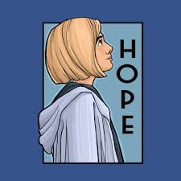

Empowerment

“The only person that deserves a special place in your life is someone that never made you feel like you were an option in theirs.” ― Shannon L.
She learned that it was possible to live on her own terms.” ― Ciahnan
“If you wait until you’re ready, you’ll be dead. And, as a life strategy, I don’t really recommend it.” ― Menna van Praag,
"That man over there says that women need to be helped into carriages, and lifted over ditches, and to have the best place everywhere. Nobody ever helps me into carriages, or over mud-puddles, or gives me any best place! And ain't I a woman?" Sojourner Truth
"More and more women are realizing that only collective strength and action will allow us to be free to fight for the kind of society that meets basic human needs." Roxanne Dunbar